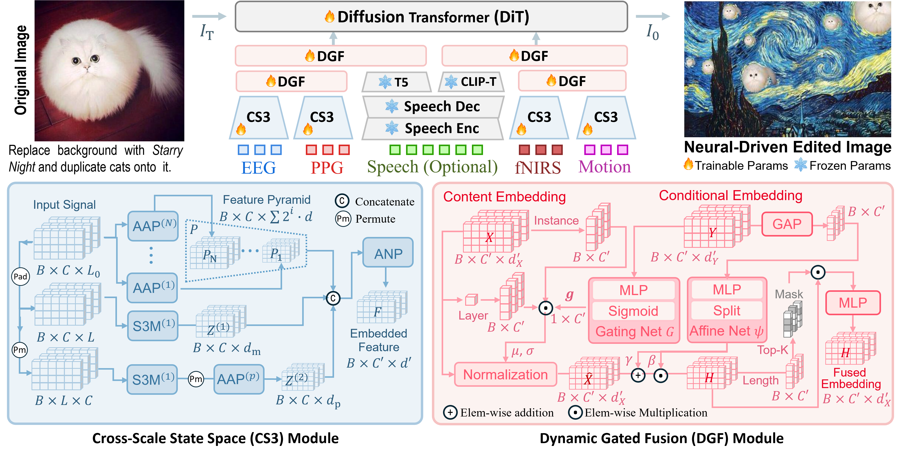
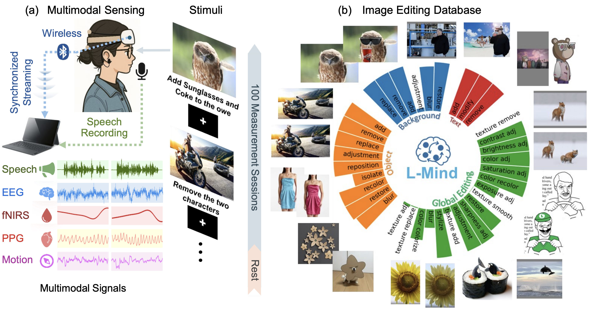

<!DOCTYPE html>
<html lang="en">

<head>
  <meta charset="utf-8" />
  <meta name="viewport" content="width=device-width, initial-scale=1.0" />
  <title>Brain-to-Image Editing Introduction</title>
  <link rel="stylesheet" href="https://cdn.jsdelivr.net/npm/reveal.js@5.1.0/dist/reveal.css" />
  <!-- Default to white theme -->
  <link rel="stylesheet" href="https://cdn.jsdelivr.net/npm/reveal.js@5.1.0/dist/theme/white.css" id="theme" />
  <!-- Default to github light highlight style -->
  <link rel="stylesheet" href="https://cdn.jsdelivr.net/npm/highlight.js@11/styles/github.min.css"
    id="highlight-theme" />
  <style>
    :root {
      --ink: #0f172a;
      --muted: #64748b;
      --teal: #0f766e;
      --blue: #2563eb;
      --violet: #6d28d9;
      --orange: #ea580c;
      --line: #dbe4ee;
    }

    .reveal {
      font-size: 31px;
      color: var(--ink);
    }

    .reveal .slides {
      text-align: left;
    }

    .reveal .slides section {
      padding: 24px 44px;
    }

    .reveal h1,
    .reveal h2,
    .reveal h3 {
      color: var(--ink);
      text-transform: none;
      letter-spacing: -0.035em;
    }

    .reveal h1 {
      font-size: 1.92em;
      font-weight: 800;
    }

    .reveal h2 {
      font-size: 1.48em;
      font-weight: 760;
      margin-bottom: 0.5em;
    }

    .reveal h3 {
      font-size: 1.02em;
      font-weight: 720;
    }

    .reveal p {
      line-height: 1.35;
    }

    .reveal strong {
      color: var(--teal);
    }

    .reveal blockquote {
      width: 90%;
      border-left: 6px solid var(--teal);
      background: #f0fdfa;
      box-shadow: none;
      padding: 0.65em 0.9em;
      text-align: left;
      font-style: normal;
    }

    .reveal table {
      font-size: 0.67em;
      margin: 0.5em auto;
      border-collapse: separate;
      border-spacing: 0;
      overflow: hidden;
      border-radius: 14px;
      box-shadow: 0 2px 12px rgba(15, 23, 42, 0.07);
    }

    .reveal table th {
      background: #0f172a;
      color: #fff;
      font-weight: 650;
    }

    .reveal table td,
    .reveal table th {
      border: 0;
      padding: 0.48em 0.75em;
    }

    .reveal table tr:nth-child(even) {
      background: #f8fafc;
    }

    .reveal pre {
      font-size: 0.52em;
      box-shadow: none;
    }

    .reveal .subtitle {
      color: var(--teal);
      margin-top: 0.5em;
      font-size: 0.78em;
    }

    .reveal .slide-number {
      right: 22px;
      bottom: 20px;
      padding: 0.38em 0.62em;
      border-radius: 9px;
      background: rgba(15, 23, 42, 0.88);
      color: #fff;
      font-size: 20px;
      font-weight: 750;
      letter-spacing: 0.03em;
    }

    .reveal .caption {
      color: var(--muted);
      font-size: 0.57em;
      margin-top: 0.8em;
      text-align: center;
    }

    .reveal .paper-figure {
      display: block;
      max-width: 94%;
      max-height: 55vh;
      margin: 0.35em auto;
      object-fit: contain;
      border: 1px solid var(--line);
      border-radius: 12px;
      box-shadow: 0 5px 18px rgba(15, 23, 42, 0.10);
    }
    .reveal .paper-figure.teaser { max-height: 45vh; }
    .reveal .paper-figure.architecture { max-height: 57vh; }
    .reveal .paper-figure.results-grid { max-width: 88%; max-height: 58vh; }
    .reveal .paper-figure.dataset-figure { max-height: 48vh; }
    .reveal .paper-figure.editing-examples { max-height: 55vh; }

    .reveal .eyebrow {
      color: var(--teal);
      font-size: 0.48em;
      font-weight: 800;
      letter-spacing: 0.13em;
    }

    .reveal .muted {
      color: var(--muted);
      margin-bottom: 0.15em;
    }

    .reveal .accent {
      color: var(--teal);
      font-weight: 750;
      margin: 0.35em 0 0;
    }

    .reveal .hero-line {
      height: 7px;
      width: 142px;
      background: linear-gradient(90deg, var(--teal), var(--blue), var(--violet));
      border-radius: 6px;
      margin: 0.8em 0;
    }

    .reveal .big-formula {
      font-size: 1.55em;
      font-weight: 700;
      text-align: center;
      color: var(--teal);
      margin: 0.35em 0;
    }

    .split {
      display: grid;
      grid-template-columns: 1fr 1.2fr;
      gap: 1.25em;
      align-items: center;
    }

    .editing-layout {
      display: grid;
      grid-template-columns: 0.9fr 1.1fr;
      gap: 1em;
      align-items: center;
    }

    .editing-copy {
      padding: 0.25em 0.2em;
    }

    .editing-copy h3 {
      color: var(--teal);
      margin: 0 0 0.35em;
    }

    .editing-copy .big-formula {
      text-align: left;
      font-size: 1.28em;
      margin: 0.1em 0 0.45em;
    }

    .editing-copy>p {
      font-size: 0.64em;
      line-height: 1.45;
    }

    .editing-diagram .mermaid {
      margin: 0;
      max-height: 50vh;
    }

    .editing-diagram .mermaid svg {
      max-height: 45vh;
    }

    .io-points {
      display: grid;
      gap: 0.35em;
      margin-top: 0.7em;
    }

    .io-points div {
      padding: 0.42em 0.55em;
      background: #f0fdfa;
      border-left: 3px solid var(--teal);
    }

    .io-points b {
      display: block;
      color: var(--teal);
      font-size: 0.57em;
    }

    .io-points span {
      display: block;
      color: var(--muted);
      font-size: 0.5em;
      margin-top: 0.12em;
    }

    .signal-stack {
      display: grid;
      gap: 0.35em;
    }

    .signal-stack div {
      padding: 0.55em 0.7em;
      border: 1px solid var(--line);
      border-radius: 12px;
      background: #f8fafc;
    }

    .signal-stack b {
      display: inline-block;
      min-width: 5em;
      color: var(--teal);
    }

    .signal-stack span {
      color: var(--muted);
      font-size: 0.75em;
    }

    .three-cards,
    .task-grid,
    .challenge-grid,
    .impact-grid,
    .stat-row,
    .future-path {
      display: grid;
      gap: 0.55em;
    }

    .three-cards {
      grid-template-columns: repeat(3, 1fr);
      margin: 1.1em auto;
      width: 82%;
      text-align: center;
    }

    .three-cards div {
      padding: 0.75em;
      border-radius: 14px;
      background: #f1f5f9;
      border-top: 4px solid var(--teal);
    }

    .three-cards div:nth-child(2) {
      border-color: var(--blue);
    }

    .three-cards div:nth-child(3) {
      border-color: var(--violet);
    }

    .three-cards strong {
      display: block;
      font-size: 1.05em;
    }

    .three-cards span {
      font-size: 0.65em;
      color: var(--muted);
    }

    .roadmap {
      display: grid;
      grid-template-columns: repeat(5, 1fr);
      gap: 0.35em;
      margin-top: 1.4em;
    }

    .roadmap div {
      padding: 0.65em 0.42em;
      min-height: 5.6em;
      border-left: 3px solid var(--line);
      background: #f8fafc;
    }

    .roadmap b {
      color: var(--teal);
      font-size: 0.64em;
      display: block;
    }

    .roadmap span {
      display: block;
      font-weight: 750;
      font-size: 0.66em;
      margin: 0.35em 0;
    }

    .roadmap small {
      color: var(--muted);
      font-size: 0.46em;
      line-height: 1.2;
      display: block;
    }

    .task-grid {
      grid-template-columns: 1fr 1fr;
      margin-top: 0.75em;
    }

    .task-card {
      padding: 0.9em 1em;
      border-radius: 16px;
      color: #fff;
      min-height: 6.9em;
      border: 1px solid rgba(255, 255, 255, 0.2);
      box-shadow: 0 7px 18px rgba(15, 23, 42, 0.14);
    }

    .task-card h3,
    .task-card p,
    .task-card small {
      color: #fff;
    }

    .task-card h3 {
      margin: 0;
    }

    .task-card .formula {
      font-size: 1.1em;
      font-weight: 700;
      margin: 0.42em 0;
    }

    .task-card .katex,
    .task-card .katex * {
      color: #fff !important;
    }

    .task-card p:not(.formula) {
      font-size: 0.66em;
      margin: 0.3em 0;
    }

    .task-card small {
      font-size: 0.48em;
      opacity: 0.85;
    }

    .task-card.blue {
      background: #0f6b78;
    }

    .task-card.purple {
      background: #6d28d9;
    }

    .related-task-diagrams {
      display: grid;
      grid-template-columns: 1fr 1fr;
      gap: 0.8em;
      margin-top: 0.2em;
    }

    .related-task-diagrams>div {
      background: #f8fafc;
      border: 1px solid var(--line);
      border-radius: 14px;
      padding: 0.55em 0.65em;
    }

    .related-task-diagrams h3 {
      margin: 0;
      font-size: 0.78em;
    }

    .related-task-diagrams pre.mermaid {
      margin: 0.25em auto;
      max-height: 39vh;
    }

    .related-task-diagrams pre.mermaid svg {
      max-height: 35vh;
    }

    .related-task-diagrams p {
      color: var(--muted);
      font-size: 0.48em;
      margin: 0.2em 0 0;
      text-align: center;
    }

    .quote-stage {
      text-align: center;
      margin-top: 0.6em;
    }

    .quote-stage h3 {
      font-size: 1em;
    }

    .quote-stage h2 {
      font-size: 1.32em;
      color: var(--teal);
    }

    .quote-stage em {
      color: var(--orange);
    }

    .arrow-down {
      color: var(--blue);
      font-size: 1.35em;
    }

    .challenge-grid {
      grid-template-columns: 1fr 1fr;
    }

    .challenge-grid>div {
      border: 1px solid var(--line);
      border-radius: 12px;
      padding: 0.55em 0.7em;
      background: #fff;
    }

    .challenge-grid b {
      color: var(--orange);
      font-size: 0.55em;
    }

    .challenge-grid h3 {
      margin: 0.18em 0;
      font-size: 0.78em;
    }

    .challenge-grid p {
      font-size: 0.55em;
      color: var(--muted);
      margin: 0;
    }

    .preserve {
      display: flex;
      justify-content: center;
      gap: 2em;
      margin: 1.5em 0 0.7em;
    }

    .preserve div {
      display: grid;
      grid-template-columns: 0.9em auto;
      column-gap: 0.45em;
      align-items: center;
    }

    .preserve b {
      font-size: 0.75em;
    }

    .preserve small {
      grid-column: 2;
      color: var(--muted);
      font-size: 0.48em;
    }

    .dot {
      width: 0.7em;
      height: 0.7em;
      border-radius: 50%;
      grid-row: span 2;
    }

    .dot.edit {
      background: var(--orange);
    }

    .dot.keep {
      background: var(--teal);
    }

    .impact-grid {
      grid-template-columns: repeat(3, 1fr);
      margin-top: 0.9em;
    }

    .impact-grid div {
      background: #f8fafc;
      border-radius: 14px;
      padding: 0.75em;
    }

    .impact-grid span {
      color: var(--violet);
      font-size: 1.1em;
    }

    .impact-grid h3 {
      margin: 0.22em 0;
      font-size: 0.78em;
    }

    .impact-grid p {
      font-size: 0.54em;
      color: var(--muted);
      margin: 0;
    }

    .stat-row {
      grid-template-columns: repeat(4, 1fr);
      margin: 1.4em 0;
      text-align: center;
    }

    .stat-row div {
      border-right: 1px solid var(--line);
    }

    .stat-row div:last-child {
      border: 0;
    }

    .stat-row strong {
      display: block;
      font-size: 1.48em;
    }

    .stat-row span {
      display: block;
      color: var(--muted);
      font-size: 0.55em;
    }

    .limit-list {
      display: grid;
      gap: 0.28em;
    }

    .limit-list div {
      display: grid;
      grid-template-columns: 8em 1fr;
      gap: 0.5em;
      padding: 0.4em 0.65em;
      background: #f8fafc;
      border-left: 3px solid var(--orange);
    }

    .limit-list b {
      font-size: 0.65em;
    }

    .limit-list span {
      color: var(--muted);
      font-size: 0.58em;
    }

    .future-path {
      grid-template-columns: repeat(3, 1fr);
      margin-top: 1.4em;
    }

    .future-path div {
      padding: 0.8em;
      border-top: 4px solid var(--teal);
      background: #f8fafc;
    }

    .future-path div:nth-child(2) {
      border-color: var(--blue);
    }

    .future-path div:nth-child(3) {
      border-color: var(--violet);
    }

    .future-path b {
      display: block;
      color: var(--teal);
      font-size: 0.62em;
    }

    .future-path span {
      display: block;
      font-size: 0.63em;
      margin-top: 0.38em;
    }

    .summary-stack {
      display: grid;
      gap: 0.5em;
      margin-top: 0.75em;
    }

    .summary-stack div {
      padding: 0.55em 0.75em;
      background: #f0fdfa;
      border-radius: 10px;
      font-size: 0.68em;
    }

    .summary-stack div:nth-child(2) {
      background: #eff6ff;
    }

    .summary-stack div:nth-child(3) {
      background: #f5f3ff;
    }

    /* Mermaid: strip reveal.js pre styles, centre the SVG */
    .reveal pre.mermaid {
      background: transparent;
      border: none;
      box-shadow: none;
      padding: 0;
      margin: 0.5em auto;
      font-size: 1em;
      max-height: 48vh;
      overflow: visible;
      text-align: center;
    }

    .reveal pre.mermaid svg {
      display: block;
      width: 100% !important;
      max-width: 100%;
      max-height: 43vh;
      height: auto !important;
      margin: 0 auto;
    }
  </style>
</head>

<body>
  <div class="reveal">
    <div class="slides">
      <section data-markdown data-separator="^\n---\n$" data-separator-vertical="^\n--\n$" data-separator-notes="^Note:"
        data-charset="utf-8">
        <script type="text/template"># Brain-in-the-Loop Image Editing

## Introduction
<div class="hero-line"></div>

**Weekly Research Report: From Direct Neural Mapping to Interactive Latent Steering**

Note:
Chào mọi người, trong buổi báo cáo tiến độ hôm nay, mình muốn chia sẻ về hướng tiếp cận mới: Chỉnh sửa ảnh thông qua tín hiệu não theo cơ chế tương tác liên tục (Brain-in-the-Loop Image Editing). Chúng ta sẽ cùng nhìn lại những hạn chế cốt lõi của các phương pháp một lượt (one-shot) hiện nay, từ đó làm rõ lý do vì sao cần chuyển sang mô hình vòng lặp khép kín. Sau đó, mình sẽ trình bày chi tiết về thiết kế thực nghiệm, công thức toán học và bộ ba bài kiểm tra thống kê trên dữ liệu EEG 4 kênh, trước khi đi vào mục tiêu trọng tâm trong giai đoạn tiếp theo.

Welcome to this research progress update on Brain-in-the-Loop Image Editing. Today, we review the limitations of direct open-loop brain-to-image editing, introduce the formal definition of our interactive closed-loop framework, present an empirical statistical proof on the L-Mind dataset using 4-channel EEG with the EEGNet architecture, and outline our upcoming research milestones.

---

## Roadmap

<div class="roadmap">
  <div><b>01</b><span>Recap</span><small>One-shot brain editing</small></div>
  <div><b>02</b><span>Limitations</span><small>Capacity &amp; dynamic intent</small></div>
  <div><b>03</b><span>Paradigm</span><small>Brain-in-the-Loop definition</small></div>
  <div><b>04</b><span>Feasibility</span><small>Experimental setup &amp; protocol</small></div>
  <div><b>05</b><span>Next Steps</span><small>Proving EEG directional intent</small></div>
</div>

Note:
Nội dung bài báo cáo hôm nay gồm 5 phần chính. Đầu tiên, chúng ta sẽ điểm qua phương pháp sinh ảnh trực tiếp hiện tại. Phần hai đi sâu phân tích hai điểm nghẽn lớn về mặt dung lượng thông tin và động lực nhận thức của con người. Sang phần ba, mình sẽ định nghĩa chính xác khái niệm Brain-in-the-Loop. Phần tư là toàn bộ quy trình thực nghiệm và khung đánh giá thống kê 3 bước trên bộ dữ liệu L-Mind. Cuối cùng, phần năm sẽ chốt lại duy nhất một câu hỏi thực nghiệm mà chúng ta cần chứng minh.

Here is our agenda today. First, we recap the current one-shot brain-to-image paradigm. Second, we analyze its theoretical bottlenecks. Third, we present the proposed Brain-in-the-Loop framework. Fourth, we detail our overall experimental design, CLIP space formulation, L-Mind dataset structure, and 3-part statistical evaluation protocol. Finally, we outline our immediate research roadmap.

---

# 01 — Recap: Brain-to-Image Editing

## Current Paradigm Overview

Note:
Mở đầu báo cáo, mình xin tóm tắt nhanh về bức tranh tổng quan cũng như cách mà các nghiên cứu hiện tại đang xử lý bài toán chỉnh sửa ảnh từ tín hiệu sóng não.

Section 1 provides a quick overview of existing direct neural image editing approaches in the literature.

---

## One-Shot Brain-to-Image Editing

<div class="task-grid">
  <div class="task-card blue">
    <h3>Direct Mapping</h3>
    <p class="formula">$f(I_{src}, B) \to I_{tgt}$</p>
    <p>Predict final image $I_{tgt}$ from source image $I_{src}$ and brain signal $B$ in one pass.</p>
  </div>
  <div class="task-card purple">
    <h3>Latent Conditioning</h3>
    <p class="formula">$g(B) \to \mathbf{z}_{brain} \in \mathcal{Z}_{visual}$</p>
    <p>Map neural features to visual latent space (e.g. CLIP) to condition diffusion.</p>
  </div>
</div>

Note:
Ở các mô hình tiêu biểu hiện nay như DreamDiffusion hay LoongX, tư tưởng chủ đạo là ánh xạ trực tiếp trong một lượt duy nhất (one-shot). Tức là hệ thống sẽ nhận ảnh gốc cùng với tín hiệu não recorded được, rồi trích xuất các đặc trưng sinh học thành một vector latent $g(B)$. Vector này sau đó được bơm trực tiếp vào mô hình diffusion để sinh ra ngay bức ảnh kết quả cuối cùng.

In current state-of-the-art frameworks like DreamDiffusion or LoongX, the goal is one-shot direct mapping. The system takes a source image and recorded neural activity, maps the neural features into a latent representation via an encoder g(B), and feeds this vector into a generative diffusion model to produce the edited image in one step.

---

## Standard Direct Mapping Architecture

<div class="split">
<div>

### Open-Loop Exemplar: LoongX

* **Direct Mapping:** $f(I_{src}, B) \to I_{tgt}$ in a single feed-forward pass.
* **Brain Encoders:** CS3 (Cross-Scale State Space) and DGF (Dynamic Gated Fusion) modules map multimodal signals to visual latent space.
* **Backbone:** Conditions a Diffusion Transformer (DiT) directly without cognitive feedback.

</div>
<div>



</div>
</div>

Note:
Để mọi người dễ hình dung, đây là kiến trúc đại diện cho dòng mô hình vòng mở (open-loop), cụ thể là LoongX. Tín hiệu não ở đây được coi như một câu prompt cố định, đưa qua các khối mã hóa như CS3 hay DGF để điều khiển Diffusion Transformer (DiT). Hạn chế lớn nhất của cách làm này là hoàn toàn thiếu vắng một vòng phản hồi (feedback loop). Nếu ảnh tạo ra ban đầu bị lỗi hoặc không đúng ý người dùng, họ hoàn toàn không có cách nào để can thiệp hay sửa lại.

Here is the structural schematic of the open-loop architecture, exemplified by state-of-the-art models like LoongX. The brain signal is treated as a static prompt. It passes through CS3/DGF encoders, and cross-attention conditions the Diffusion Transformer (DiT). Notice there is no feedback loop: the user has no way to adjust or guide the output if the initial generation fails to match their intent.

---

## Benchmark Dataset: L-Mind

<div class="split">
<div>

### The Sole Benchmark for Brain Editing

* **Sole Dataset:** L-Mind is currently the **only existing benchmark dataset** specifically for brain-guided image editing.
* **Scale:** 23,891 trials across 35 image editing tasks (6,002 valid pairs on disk).
* **Pure Intent Paradigm:** Subjects picture the edit **without seeing target image $I_{tgt}$**, isolating top-down neural intent.

</div>
<div>



</div>
</div>

Note:
Nói về dữ liệu, L-Mind hiện là bộ benchmark duy nhất và chuẩn mực nhất được xây dựng riêng cho bài toán chỉnh sửa ảnh qua tín hiệu não. Điểm cốt lõi trong quy trình thu thập của L-Mind là: tình nguyện viên sẽ nhìn ảnh gốc kèm câu lệnh chỉnh sửa, rồi tự hình dung trong đầu bức ảnh mong muốn mà **không được xem trước ảnh đích**. Nhờ vậy, tín hiệu EEG thu được mới phản ánh đúng ý định thị giác chủ động (top-down visual intent) xuất phát từ não bộ.

L-Mind is currently the only existing benchmark dataset built specifically for brain-guided image editing. Crucially, subjects view the source image and text instruction, then mentally visualize the target image WITHOUT seeing it, ensuring recorded EEG reflects pure top-down intent.

---

## L-Mind Trial Signal Recording Timeline

<div class="split">
<div>

### Multimodal Signal Acquisition

* **Audio Stream:** Continuous audio recording captures subject reading instruction aloud (speech onset/offset markers).
* **EEG Stream:** 4-channel EEG recorded continuously at 250 Hz via LSL (Lab Streaming Layer).
* **Synchronized Markers:** Hardware LSL timestamps tie audio markers, visual stimuli, and EEG channels together.

</div>
<div>

<pre class="mermaid">
graph TD
    T0["0.0s — Stimulus Presentation: Show I_src + Prompt"] --> T1["0.0s-3.0s — Audio Marker: Read Prompt Aloud"]
    T1 --> T2["3.0s-8.0s — EEG Stream: Mental Imagery (No I_tgt)"]
    T2 --> T3["8.0s — LSL Marker: Save Trial Data"]

    style T0 fill:#37474f,color:#fff,stroke:#263238
    style T1 fill:#eab308,color:#000,stroke:#ca8a04
    style T2 fill:#0f766e,color:#fff,stroke:#0d5e56
    style T3 fill:#1565c0,color:#fff,stroke:#0d47a1
</pre>

</div>
</div>

Note:
Slide này mô tả chi tiết mốc thời gian diễn ra trong mỗi lượt đo (trial). Khi ảnh gốc và câu lệnh xuất hiện trên màn hình, người tham gia sẽ đọc to câu lệnh đó lên. Việc đọc này vừa giúp ghi lại mốc âm thanh, vừa kích hoạt quá trình nhận thức. Sau đó, họ có 5 giây tập trung hình dung việc chỉnh sửa trong đầu, và đây chính là lúc tín hiệu EEG 4 kênh được ghi lại liên tục thông qua hệ thống LSL với mốc thời gian đồng bộ chuẩn xác.

This timeline shows exactly when signals are captured during each trial. First, the source image and prompt appear. The subject reads the prompt aloud (audio recorded to establish speech markers), then mentally imagines the edit for 5 seconds while 4-channel EEG is captured via LSL, before the trial marker is logged.

---

# 02 — Theoretical Limitations

## Bottlenecks of One-Shot Brain Editing

Note:
Tiếp theo, ở Phần 2, chúng ta sẽ cùng mổ xẻ hai rào cản mang tính lý thuyết, giải thích tại sao cách tiếp cận sinh ảnh trực tiếp một lượt lại rất khó vượt qua khi làm việc với tín hiệu não không xâm lấn.

In Section 2, we analyze why direct one-shot generation fundamentally struggles when applied to non-invasive brain signals.

---

## Limitation 1: Information Capacity Bottleneck

<div class="split">
<div>

### Information Mismatch

* **Low Signal SNR:** EEG signals are attenuated by skull bone and tissue.
* **Low Bit-Rate:** EEG provides tens of bits/sec vs millions of image pixels.
* **Over-Conditioning:** Forcing low-rate signals to dictate pixels causes visual artifacts.

</div>
<div>

<pre class="mermaid">
graph TD
    A[Brain Signals] -->|Low SNR| B[EEG Stream: Low Bit-Rate]
    B -->|Mismatch| C[Image Space: High D.O.F.]
    C -->|Direct Mapping| D[Result: Visual Artifacts]

    style A fill:#37474f,color:#fff,stroke:#263238
    style B fill:#1565c0,color:#fff,stroke:#0d47a1
    style C fill:#6d28d9,color:#fff,stroke:#4c1d95
    style D fill:#b91c1c,color:#fff,stroke:#7f1d1d
</pre>

</div>
</div>

Note:
Rào cản đầu tiên nằm ở sự lệch pha nghiêm trọng về dung lượng thông tin. Tín hiệu EEG đo ngoài da đầu có tỷ số tín hiệu trên nhiễu (SNR) rất thấp do sóng não bị hao hụt nhiều khi đi qua hộp sọ. Tốc độ truyền tải thông tin của EEG chỉ dừng lại ở mức vài chục đến vài trăm bit/giây, trong khi một bức ảnh độ phân giải cao lại chứa tới hàng triệu bậc tự do. Việc ép một đường truyền băng thông thấp như EEG phải quyết định tỉ mỉ từng pixel ảnh sẽ dẫn đến hiện tượng nhiễu hạt, méo mó cấu trúc và vỡ hình.

The first major limitation is information capacity. Non-invasive EEG has a low signal-to-noise ratio due to skull attenuation. The information rate of multi-channel EEG is tens to hundreds of bits per second, whereas a high-resolution image requires millions of degrees of freedom. Trying to decode complete visual details from a low-bandwidth channel leads to generative hallucinations and structural collapse.

---

## Limitation 2: Visual Intent Dynamics

<div class="split">
<div>

### Cognitive Feedback Gap

* **Abstract Imagery:** Mental imagery is conceptual, not a rendered graphic.
* **Dynamic Intent:** Users evaluate visual outputs before clarifying their goal.
* **Visual Feedback:** Visual cortex relies on intermediate images to refine intent.

</div>
<div>

<pre class="mermaid">
graph TD
    User["Human Brain (Fluid Intent)"] -->|Static Signal B| Model["Open-Loop Model f(I, B)"]
    Model -->|Generates| Output["Final Image I_tgt"]
    Output -.->|MISSING FEEDBACK| Gap["Cognitive Feedback Gap: User cannot inspect intermediate renders to refine intent"]
    Gap -.-> User

    style User fill:#6d28d9,color:#fff,stroke:#4c1d95
    style Model fill:#1565c0,color:#fff,stroke:#0d47a1
    style Output fill:#bf360c,color:#fff,stroke:#7f0000
    style Gap fill:#b91c1c,color:#fff,stroke:#7f1d1d,stroke-dasharray: 5 5
</pre>

</div>
</div>

Note:
Rào cản thứ hai đến từ bản chất nhận thức của con người. Tưởng tượng thị giác trong não bộ không phải là một bức tranh đồ họa cố định có sẵn, mà nó mang tính khái niệm và biến đổi liên tục. Vỏ não thị giác vận hành theo cơ chế tương tác: chúng ta cần phải nhìn thấy một bản phác thảo trung gian thì mới biết mình muốn điều chỉnh thêm bớt thế nào. Các hệ thống vòng mở (open-loop) bỏ qua hoàn toàn cơ chế phản hồi nhận thức tự nhiên này, bắt người dùng phải đưa ra ý định hoàn chỉnh ngay từ đầu.

The second limitation is cognitive: human visual mental imagery is abstract and fluid, not static. Cognitive neuroscience shows that human intent evolves interactively. When editing an image, a user rarely has an exact pixel representation in mind initially; instead, they inspect candidate visual renders and refine their intent step-by-step. Open-loop systems completely ignore this natural cognitive feedback loop.

---

# 03 — Brain-in-the-Loop Paradigm

## Formal Definition &amp; Mechanics

Note:
Từ những điểm nghẽn trên, ở Phần 3, mình xin giới thiệu giải pháp mà nhóm đề xuất: Framework Chỉnh sửa Ảnh tương tác Brain-in-the-Loop.

Section 3 introduces our proposed framework: Brain-in-the-Loop Image Editing.

---

## Defining Brain-in-the-Loop Image Editing

> **Concept:** Interactive closed-loop steering. Decode **directional shift vectors** ($\Delta \mathbf{z}$) to steer a generative model step-by-step through latent space.

* **Directional Steering:** Decode relative vector ($\Delta \mathbf{z}$), not full images.
* **Interactive Iteration:** Step forward iteratively ($I_{t+1} = I_t + \alpha \Delta \mathbf{z}$).
* **Closed-Loop Feedback:** Real-time visual display updates user intent continuously.

Note:
Tư tưởng cốt lõi của đề xuất rất đơn giản: Chúng ta không bắt tín hiệu EEG phải gánh toàn bộ chi tiết bức ảnh, mà chỉ giải mã ra một **vector hướng di chuyển $\Delta \mathbf{z}$** trong không gian latent. Hãy hình dung vector này giống như một chiếc cần điều khiển (joystick): mỗi nhịp suy nghĩ sẽ nhích bức ảnh đi một bước theo đúng hướng mong muốn. Người dùng quan sát bức ảnh vừa được cập nhật, não bộ tiếp nhận phản hồi thị giác đó để tinh chỉnh ý định cho bước tiếp theo, tạo thành một vòng lặp kín giữa Người và AI.

Here is our core definition. Instead of forcing EEG to specify a full image, we decode a directional shift vector Delta z in latent space. This vector acts like a joystick, steering the image generation step-by-step. The user observes the intermediate render, which updates their cognitive intent, creating a continuous human-ai closed loop.

---

## One-Shot vs. Brain-in-the-Loop Comparison

| Dimension | One-Shot Brain Editing | Brain-in-the-Loop Editing |
|---|---|---|
| **Signal Role** | Full target specification | **Directional shift vector ($\Delta \mathbf{z}$)** |
| **Paradigm** | Open-loop ($f(I, B) \to I'$) | **Closed-loop ($I_{t+1} = I_t + \alpha \Delta \mathbf{z}$)** |
| **User Role** | Passive spectator | **Active supervisor in visual loop** |
| **Error Recovery** | Unrecoverable artifacts | **Step-by-step steering &amp; rollback** |
| **Info Required** | High (exact pixel details) | **Low (relative direction in latent space)** |

Note:
Bảng so sánh này làm nổi bật sự khác biệt giữa hai tư duy. Mô hình one-shot đòi hỏi băng thông thông tin cực lớn và đẩy người dùng vào thế hoàn toàn thụ động. Ngược lại, Brain-in-the-Loop chỉ yêu cầu giải mã hướng điều khiển tương đối, giúp người dùng luôn giữ vai trò giám sát chủ động và có thể dễ dàng sửa lỗi hoặc quay lui qua từng bước tinh chỉnh.

This comparison table highlights the fundamental differences. One-shot editing requires high-bandwidth input and leaves the user passive. Brain-in-the-Loop requires only relative directional intent, keeping the user actively in control while making error correction natural through step-by-step steering.

---

## Interactive Control Loop Flow

<pre class="mermaid">
graph LR
    State[Current Image I_t] -->|Visual Display| Eye[Human Visual Cortex]
    Eye -->|Mental Imagery| Brain[Neural Activity]
    Brain -->|EEG Stream| Decoder[Directional Encoder]
    Decoder -->|Shift Δz| Latent[Latent Update]
    Latent -->|Diffusion Step| State

    style State fill:#37474f,color:#fff,stroke:#263238
    style Eye fill:#1565c0,color:#fff,stroke:#0d47a1
    style Brain fill:#6d28d9,color:#fff,stroke:#4c1d95
    style Decoder fill:#0f766e,color:#fff,stroke:#0d5e56
    style Latent fill:#ea580c,color:#fff,stroke:#c2410c
</pre>

Note:
Sơ đồ này thể hiện luồng vận hành của vòng lặp: Ảnh hiện tại $I_t$ hiển thị lên màn hình $\to$ Vỏ não thị giác quan sát và hình dung hướng muốn sửa $\to$ Tín hiệu EEG phát ra được bộ giải mã chuyển thành vector hướng $\Delta \mathbf{z} \to$ Tọa độ không gian latent được cập nhật $\to$ Mô hình diffusion chạy một bước nhanh để đưa ra bức ảnh mới $I_{t+1}$.

This flowchart illustrates the interactive loop: the current image I_t is displayed to the user. The human visual cortex evaluates it and generates mental imagery. The EEG signal is processed by our directional encoder, producing shift vector Delta z. The latent embedding updates, driving a fast diffusion step to render image I_{t+1}.

---

# 04 — Proposed Experimental Setup &amp; Protocol

## Feasibility &amp; Protocol Setup on L-Mind

Note:
Đến Phần 4, mình sẽ trình bày chi tiết về thiết kế thực nghiệm, biểu diễn toán học trong không gian CLIP, cùng với bộ ba bài kiểm tra thống kê được xây dựng để đánh giá tính khảthi của phương pháp.

Section 4 presents our experimental design, CLIP space formulation, L-Mind dataset structure, and 3-part statistical evaluation protocol.

---

## Overall Experimental Design

<pre class="mermaid">
graph TD
    subgraph TargetBranch["Visual Target Direction (Ground Truth)"]
        I_src[Source Image I_src] --> CLIP[Frozen CLIP ViT-B/32 Encoder]
        I_tgt[Edited Image I_tgt] --> CLIP
        CLIP --> Z_src[Source Vector z_src]
        CLIP --> Z_tgt[Target Vector z_tgt]
        Z_src & Z_tgt --> D_gt[Ground-Truth Direction Vector d_gt]
    end

    subgraph EEGBranch["Neural Intent Decoding (Model)"]
        EEG[4-Channel EEG Stream] --> EEGNet[EEGNet Encoder g_theta]
        EEGNet --> DeltaZ[Predicted Direction Vector Δz_eeg]
    end

    D_gt & DeltaZ --> Loss[Directional Cosine Loss L_dir]

    style I_src fill:#37474f,color:#fff,stroke:#263238
    style I_tgt fill:#1565c0,color:#fff,stroke:#0d47a1
    style CLIP fill:#6d28d9,color:#fff,stroke:#4c1d95
    style D_gt fill:#ea580c,color:#fff,stroke:#c2410c
    style EEG fill:#0f766e,color:#fff,stroke:#0d5e56
    style EEGNet fill:#0d47a1,color:#fff,stroke:#1565c0
    style DeltaZ fill:#15803d,color:#fff,stroke:#166534
    style Loss fill:#b91c1c,color:#fff,stroke:#7f1d1d
</pre>

Note:
Đây là sơ đồ tổng thể của luồng thực nghiệm với 2 nhánh song song: Nhánh phía trên là nhánh mục tiêu thị giác, sử dụng bộ mã hóa CLIP ViT-B/32 (được đóng đóng bồi) để trích xuất vector hướng chỉnh sửa thực tế $d_{gt}$ từ cặp ảnh gốc và ảnh đích. Nhánh phía dưới là nhánh giải mã tín hiệu não, đưa sóng EEG 4 kênh qua mô hình EEGNet để dự đoán vector hướng $\Delta z_{eeg}$. Mô hình được huấn luyện bằng hàm mất mát Directional Cosine Loss.

Here is the overall experimental design. We build a dual-branch framework:
Top branch: Source and edited target images pass through a frozen CLIP ViT-B/32 encoder to compute the ground-truth edit direction vector d_gt.
Bottom branch: The subject's 4-channel EEG signal passes through our EEGNet encoder g_theta to predict direction vector Delta z_eeg.
We train by minimizing Directional Cosine Loss between predicted and ground-truth vectors.

---

## Mathematical Formulation &amp; CLIP Space

### 1. CLIP Image Embedding Mapping
Using frozen `openai/clip-vit-base-patch32` visual encoder $E(\cdot)$:

$$ \mathbf{z}\_{src} = \frac{E(I\_{src})}{\Vert E(I\_{src}) \Vert\_2}, \quad \mathbf{z}\_{tgt} = \frac{E(I\_{tgt})}{\Vert E(I\_{tgt}) \Vert\_2} $$

### 2. Direction Vectors &amp; Loss
* **Ground-Truth:** $\mathbf{v} = \mathbf{z}\_{tgt} - \mathbf{z}\_{src},\quad \mathbf{d}\_{gt} = \mathbf{v} / \Vert \mathbf{v} \Vert\_2$
* **Predicted:** $\Delta \mathbf{z}\_{eeg} = g\_\theta(\mathbf{X}\_{eeg}),\quad \Vert \Delta \mathbf{z}\_{eeg} \Vert\_2 = 1$
* **Loss:** $\mathcal{L}\_{dir} = 1 - \cos(\Delta \mathbf{z}\_{eeg},\, \mathbf{d}\_{gt})$

Note:
Về mặt công thức: Ảnh gốc $I_{src}$ và ảnh đích $I_{tgt}$ được chiếu vào không gian nhúng CLIP rồi chuẩn hóa L2 về mặt cầu đơn vị 512 chiều. Vector hướng chuẩn $d_{gt}$ chính là vector hiệu đã được chuẩn hóa. Mạng EEG $g_\theta$ sẽ học cách ánh xạ dữ liệu EEG 4 kênh thành một vector đơn vị $\Delta z_{eeg}$ sao cho góc giữa hai vector này là nhỏ nhất.

To formulate the proof mathematically: we map source image I_src and edited target image I_tgt into CLIP space using openai/clip-vit-base-patch32. Both embeddings are L2-normalized onto the 512D unit sphere. Ground-truth direction d_gt is the normalized difference vector. Our EEG encoder g_theta maps 4-channel EEG into a unit vector Delta z_eeg, trained with Directional Cosine Loss.

---

## Proof Strategy: 3 Statistical Tests

Triangulating hypothesis across parametric and non-parametric frameworks:

| Test | Statistical Framework | Confound Ruled Out |
|---|---|---|
| **Test 1** — 1-Sample $t$-test | Parametric (Student, 1908) | Zero alignment by chance |
| **Test 2** — Paired $t$-test | Parametric (Fisher, 1925) | Directionally aligned but useless |
| **Test 3** — Permutation Test | Non-parametric (Fisher, 1935) | Generic shortcut, non-EEG specific |

Note:
Để khẳng định kết quả một cách tâm phục khẩu phục, chúng tôi xây dựng 3 bài kiểm tra thống kê độc lập: Test 1 kiểm tra góc lệch hướng bằng t-test 1 mẫu so với 0. Test 2 kiểm tra hiệu quả thực tế bằng paired t-test trên độ giảm khoảng cách semantic. Test 3 dùng kiểm định hoán vị (permutation test) 1,000 lần để loại bỏ hoàn toàn khả năng mô hình học vẹt hoặc ăn may.

To provide rigorous proof, we execute three independent statistical tests. Test 1 proves direction alignment using a 1-sample t-test against zero. Test 2 proves functional utility using a paired t-test on distance reduction. Test 3 rules out spurious correlations using a 1,000-run permutation test.

---

## Test 1: Directional Heading Accuracy (Proposed Protocol)

**Hypothesis:** $\Delta\mathbf{z}\_{eeg}$ aligns with ground-truth direction $\mathbf{d}\_{gt}$ ($H\_0: \mu\_{cos} = 0$).

$$ t = \frac{\bar{x} - 0}{s / \sqrt{N}} $$

* **Metric:** Mean Cosine Similarity over 601 held-out test samples.
* **Protocol:** Evaluate directional alignment in 512D unit sphere $\mathbb{S}^{511}$.
* **Decision Rule:** One-sample $t$-test rejecting random heading ($p < 0.05$).

Note:
Bài test 1 đo độ chính xác về hướng: Trên mặt cầu 512 chiều, hai vector ngẫu nhiên bất kỳ sẽ có độ tương đồng cosine trung bình bằng 0. Quy trình của chúng tôi là tính Cosine trung bình trên 601 mẫu test độc lập và chạy 1-sample t-test với giả thuyết $H_0 = 0$. Nếu $p < 0.05$, ta khẳng định vector EEG dự đoán thực sự có hướng trùng khớp với ý định.

Test 1 evaluates directional heading accuracy. In a 512-dimensional continuous sphere, random vectors have an expected cosine similarity of zero. We will compute the mean cosine similarity over 601 unseen test samples and execute a 1-sample t-test against zero.

---

## Test 2: Semantic Distance Reduction (Proposed Protocol)

**Hypothesis:** Predicted EEG vector reduces distance to target in CLIP space ($H\_0: D\_{before} \le D\_{after}$).

$$ D = \Vert \mathbf{z}\_{src} + \alpha\cdot\Delta\mathbf{z}\_{eeg} - \mathbf{z}\_{tgt} \Vert\_2 $$

* **Metric:** Distance reduction rate with step size $\alpha = 0.1$.
* **Protocol:** Shift source embedding along predicted vector and re-measure distance to target.
* **Decision Rule:** Paired $t$-test confirming systematic distance reduction ($p < 0.05$).

Note:
Bài test 2 đánh giá giá trị sử dụng thực tế: Chúng ta lấy vị trí ảnh gốc, nhích một bước theo hướng vector EEG dự đoán với bước nhảy $\alpha = 0.1$, rồi đo xem khoảng cách tới ảnh mục tiêu có ngắn lại hay không. Kiểm định Paired t-test sẽ kết luận liệu sự kéo gần khoảng cách này có ý nghĩa thống kê hay không.

Test 2 evaluates functional semantic utility. We shift the source embedding along the predicted EEG direction with step size alpha=0.1. Across 601 test trials, we measure if the distance to the target image decreases, using a paired t-test to confirm functional effectiveness.

---

## Test 3: Permutation Test (Gold Standard Protocol)

**Hypothesis:** Performance requires sample-specific EEG pairing (1,000 iterations, model weights frozen).

* **Procedure:** Freeze model. Shuffle EEG-target pairs 1,000 times to build empirical null.
* **Metric:** Compare true mean cosine score $S\_{true}$ against null distribution $S\_{null}$.
* **Decision Rule:** Empirical $p$-value ($p < 0.05$) proving sample-specific neural intent decoding.

Note:
Bài test 3 trả lời câu hỏi hóc húa nhất: Liệu mô hình có thực sự giải mã được sóng não riêng của từng mẫu, hay chỉ đang đoán một hướng chung chung cho toàn bộ dataset? Chúng tôi đóng băng mô hình, xáo trộn ngẫu nhiên các cặp EEG và ảnh 1,000 lần để tạo phân phối ngẫu nhiên (null distribution). Nếu kết quả ghép đúng vượt trội hoàn toàn so với khi xáo trộn ($p < 0.05$), điều đó chứng minh mô hình thực sự hiểu được ý định sinh học trong từng trial.

Test 3 directly addresses whether the model learned generic shortcuts or genuine trial-specific intent. With model weights frozen, we shuffle the EEG-to-target pairings 1,000 times to build the empirical null distribution. If performance collapses under shuffling, sample-specific intent decoding is proven.

---

## Proposed Evaluation Protocol Matrix

Evaluation design on $N = 601$ **held-out test samples**:

| Test | Target Metric | Null Hypothesis $H_0$ | Statistical Framework | Decision Criterion |
|---|---|---|---|---|
| **Test 1** — Heading Accuracy | Mean Cosine Similarity | $\mu\_{cos} = 0$ | 1-Sample $t$-test | $p < 0.05$ (Reject Zero) |
| **Test 2** — Distance Reduction | Distance Decrease % ($\alpha=0.1$) | $D\_{before} \le D\_{after}$ | Paired $t$-test | $p < 0.05$ (Reject Ineffective) |
| **Test 3** — Permutation Test | Shuffled Pair Correlation | $S\_{true} = S\_{null}$ | Non-parametric (1k runs) | $p < 0.05$ (Reject Generic Shortcut) |

> **Conclusion:** This 3-tier protocol rigorously isolates **statistically significant, sample-specific, functionally useful** directional intent.

Note:
Tóm gọn lại Phần 4: Khung đánh giá 3 bước này chính là bộ thước đo tiêu chuẩn của nghiên cứu. Việc vượt qua cả 3 bài test sẽ cung cấp một nền tảng thực nghiệm cực kỳ vững chắc để khẳng định tính khả thi của việc điều khiển hình ảnh bằng sóng não theo cơ chế khép kín.

To summarize Section 4: these three statistical tests form our validation protocol. Passing all three tests provides solid empirical justification for building closed-loop Brain-in-the-Loop latent steering systems.

---

# 05 — Next Steps: Proving Neural Intent

## Singular Goal: Validate EEG Information Content

Note:
Chuyển sang Phần 5, mình xin nêu rõ mục tiêu trọng tâm duy nhất của nhóm trong giai đoạn tiếp theo: Tập trung toàn bộ nguồn lực để chứng minh thực nghiệm rằng tín hiệu EEG 4 kênh mang đủ thông tin giải mã hướng ý định.

Section 5 outlines our single focus: empirically proving that 4-channel non-invasive EEG signals carry sufficient information to decode directional intent in latent space.

---

## Core Empirical Roadmap

<div class="task-grid">
  <div class="task-card blue">
    <h3>1. Contrastive Loss Training</h3>
    <p>Train EEGNet encoder using <b>InfoNCE contrastive loss</b> ($\tau = 0.07$) to eliminate global dataset vector collapse.</p>
  </div>
  <div class="task-card purple">
    <h3>2. Run 3-Tier Proof Suite</h3>
    <p>Execute <b>Test 1</b> (Heading Accuracy), <b>Test 2</b> (Distance Reduction), and <b>Test 3</b> (Permutation Test) on held-out samples.</p>
  </div>
</div>

Note:
Lộ trình thực hiện gồm 2 bước rất cụ thể: Bước 1 là áp dụng hàm mất mát tương phản InfoNCE ($\tau = 0.07$) khi huấn luyện EEGNet để triệt tiêu triệt để hiện tượng mô hình bị suy biến về vector trung bình của dataset. Bước 2 là chạy lại toàn bộ bộ 3 bài kiểm tra thống kê trên tập test độc lập để ghi nhận kết quả.

Our next step has one single objective: prove that EEG works. We will train the EEG encoder with InfoNCE contrastive loss to force sample-specific intent decoding, and then run our complete 3-tier statistical proof suite on held-out test data.

---

## The Core Question to Answer

> **Can 4-channel non-invasive EEG carry statistically significant, sample-specific directional intent in visual latent space?**

* **Validation Criterion:** Pass all 3 statistical tests (Directional Alignment, Semantic Utility, and Non-Parametric Permutation Test).
* **Significance:** Unlocks feasibility for closed-loop Brain-in-the-Loop latent steering.

Note:
Đây chính là câu hỏi mang tính quyết định của cả dự án: **Tín hiệu EEG 4 kênh không xâm lấn liệu có mang thông tin hướng ý định đặc trưng cho từng sample trong không gian CLIP hay không?** Chỉ cần giải đáp trọn vẹn câu hỏi này thông qua bộ 3 bài test, tính khả thi của phương pháp Brain-in-the-Loop sẽ hoàn toàn được khẳng định. Cảm ơn mọi người đã lắng nghe, mình rất mong nhận được những góp ý và câu hỏi thảo luận từ mọi người!

This single proof is the cornerstone of our research. Once we empirically establish that 4-channel EEG carries intent in CLIP space, the fundamental premise of Brain-in-the-Loop image editing is validated. Thank you for your attention, and I am happy to take any questions!</script>
      </section>
    </div>
  </div>

  <script src="https://cdn.jsdelivr.net/npm/reveal.js@5.1.0/dist/reveal.js"></script>
  <script src="https://cdn.jsdelivr.net/npm/reveal.js@5.1.0/plugin/markdown/markdown.js"></script>
  <script src="https://cdn.jsdelivr.net/npm/reveal.js@5.1.0/plugin/highlight/highlight.js"></script>
  <script src="https://cdn.jsdelivr.net/npm/reveal.js@5.1.0/plugin/notes/notes.js"></script>
  <script src="https://cdn.jsdelivr.net/npm/reveal.js@5.1.0/plugin/math/math.js"></script>
  <!-- Mermaid — loaded before Reveal so the class is available at init time -->
  <script src="https://cdn.jsdelivr.net/npm/mermaid@10/dist/mermaid.min.js"></script>
  <script>
    // Render diagrams only after Reveal has created the markdown slides. Rendering
    // them again while Reveal is changing slides can interrupt Mermaid mid-draw.
    var renderCycle = 0;
    var MERMAID_CONFIG = {
      startOnLoad: false,
      theme: "default",
      themeVariables: { fontSize: "20px" },
      flowchart: { useMaxWidth: false, htmlLabels: false }
    };

    mermaid.initialize(MERMAID_CONFIG);

    Reveal.initialize({
      hash: true,
      slideNumber: "c/t",
      showSlideNumber: "all",
      transition: "slide",
      plugins: [RevealMarkdown, RevealHighlight, RevealNotes, RevealMath.KaTeX],
      math: { katex: { trust: true } },
    });

    // Cache original mermaid source text before first render
    function cacheMermaidSources() {
      document.querySelectorAll("pre.mermaid").forEach(function (el) {
        if (!el.dataset.src) {
          el.dataset.src = el.textContent.trim();
        }
      });
    }

    // Render every diagram once with unique IDs. This avoids the partial first
    // render caused by Mermaid and Reveal both mutating the same elements.
    async function renderMermaid() {
      mermaid.initialize(MERMAID_CONFIG);
      renderCycle++;
      var cycle = renderCycle;
      var els = document.querySelectorAll("pre.mermaid");
      for (var i = 0; i < els.length; i++) {
        var el = els[i];
        var src = el.dataset.src;
        if (!src) continue;
        // Unique element ID per render cycle so mermaid never finds a stale SVG node
        var uid = "mrd-" + cycle + "-" + i;
        try {
          var result = await mermaid.render(uid, src);
          el.innerHTML = result.svg;
          el.setAttribute("data-processed", "true");
        } catch (err) {
          console.error("Mermaid render failed for element", i, err);
        }
      }
      Reveal.sync();
      Reveal.layout();
    }

    // Wait for the browser's first layout and any web fonts before rendering.
    // Mermaid can otherwise calculate a clipped SVG on the initial page load.
    Reveal.on("ready", async function () {
      cacheMermaidSources();
      await new Promise(function (resolve) {
        requestAnimationFrame(function () { requestAnimationFrame(resolve); });
      });
      if (document.fonts && document.fonts.ready) await document.fonts.ready;
      await renderMermaid();
    });
  </script>
</body>

</html>
